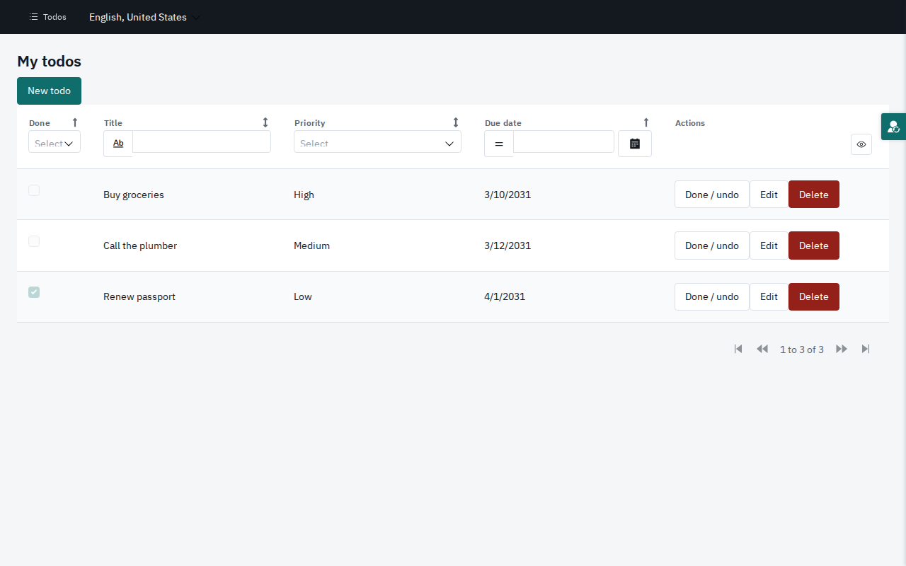
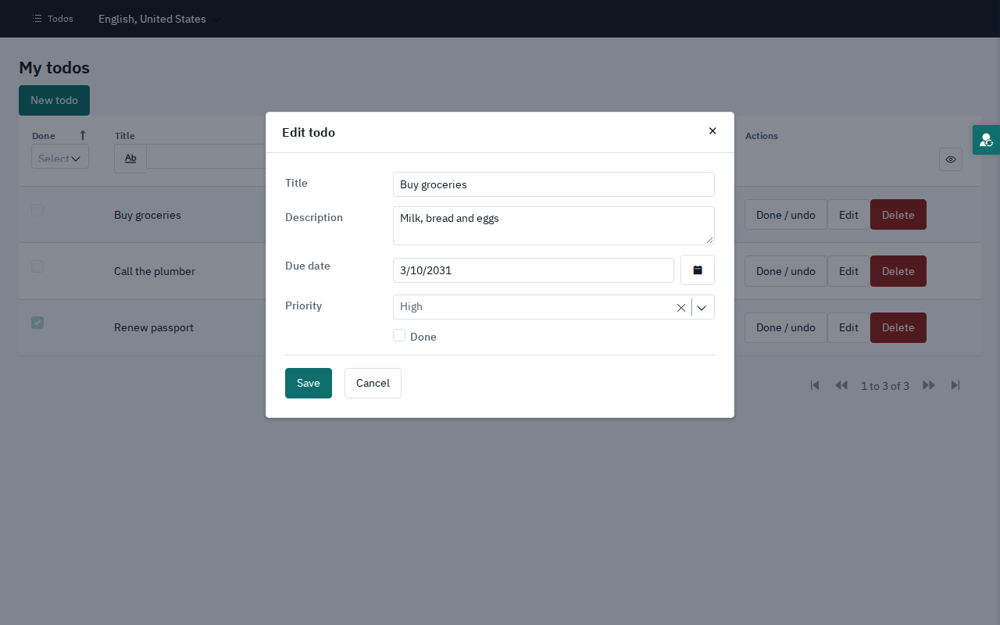
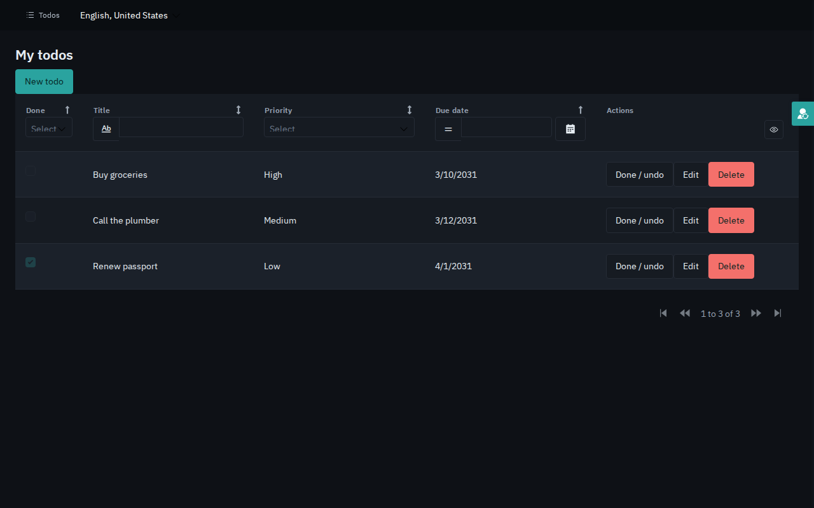
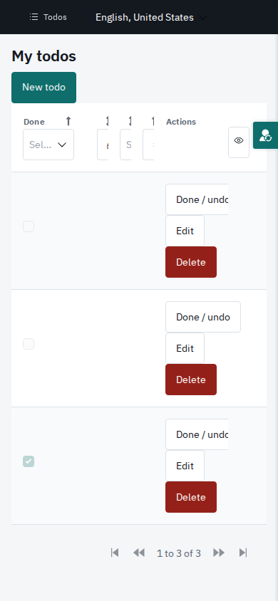

The steps
Six steps, with the original as the yardstick
Read the model
Pages, data, logic and security, straight from the project file.
Capture behaviour
End-to-end tests that pass on the Mendix app.

Carry over the look
Compile Mendix's own theme for the new app.
Build the components
React components that render Mendix's markup.
Rebuild the app
Page by page, from those components.
Prove parity
Both apps, the same tests and screenshots, in CI.
5 ⇄ 6 repeat until every test passes on both apps and the screenshots match.
Step 2 · Capture behaviour
The Mendix app writes the spec
PlaywrightTypeScriptWhat Claude Code did
- Wrote scenarios in the users' terms: sign in, add a todo, filter, sort, page through
- Found elements by what Mendix renders (
mx-name-*), so one test drives both apps - Added 16 screenshots: light, dark and phone
- Pointed one test project at Mendix and one at the rebuild
The inventory and the running Mendix app
83 tests in e2e/, the acceptance criteria as code
The suite passes on Mendix
Step 6 · Prove parity
Both apps, one suite, every push
PlaywrightStart both apps
The rebuild, and the Mendix app from the same commit.
Run the suite on Mendix
Its screenshots become the baselines.
Run it on the rebuild
Same tests; screenshots compared with Mendix's, within 1% of pixels.
Every push to the repository
Reports and screenshot diffs, kept per run
All tests pass on both apps, and no screenshot differs
The steps · Tech used
The stack
Source
Rebuild
Look & feel
Test & ship
Claude Code chose, wired up and wrote all of the above.
Logos: Simple Icons (CC0), the Playwright logo from its package (Apache-2.0), the Mendix logo from the project's theme. Trademarks belong to their owners. Type: IBM Plex (SIL OFL).
The proof
Mendix or Next.js? Drag the line


Left of the line: the Mendix app. Right: the rebuild. Both captured in CI on the same commit.
The proof
Popups, dark mode and phones too




Mendix on the left of each line, Next.js on the right. Drag to compare.